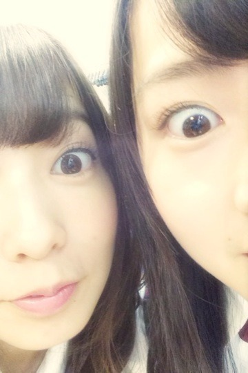
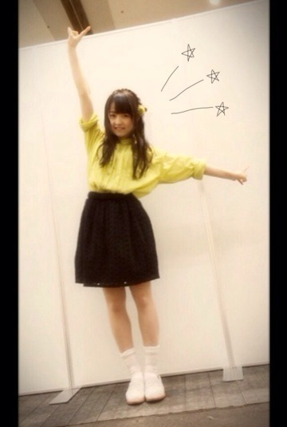
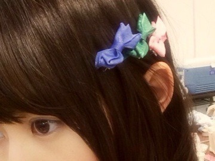
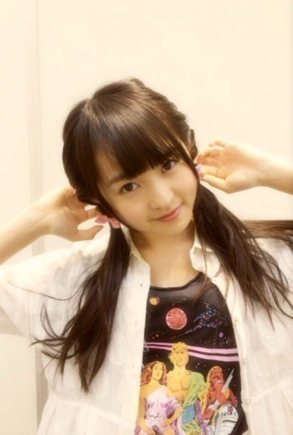

| 2014/04 07 Mon | 檸檬ケーキポケット 。561回目 |
昨日は全国握手会
今日は個別握手会がありました〜
生まれたままで
初披露だったから緊張した。
カップリングの吐息のメソッドも
実は歌ってます^^
いちばん上手。
ダンケシェーン合いの手やったよ笑
握手は久しぶりに

優里と！楽しい♪
いつもよりテンションが上がって
握手してるかも

眼球見開きの写真
メールでたくさん送ってるから
しつこいかな笑
1部

スカート mystic
お母さんのシャツワンピinした！
色が花粉ぽいから
テーマは花粉です笑

靴下 ANTIPAST
ローファー three quarter
2部3部

シャツワンピ as know as
Tシャツ UNIQLO
ショーパン PANAMABOY
靴下 tutu anna

2部にリボンのピン留め3つ

3部でも二つ結びにリボン。
Tシャツはスターウォーズが
かわいいから買っちゃった〜
実はDVD全巻持ってるの。
やっべ写真はりすぎた
はじめましての方がたくさんで
嬉しかったです。
MVや特典映像の感想
ありがとうございました！
乃木ここで流れたまりっか'17も
好評？みたいで嬉しい笑
前回のネガティブなブログについて
心配もしてくださって
ありがとうございました。
ほんと心強いです...！
メールも届いてるみたいでよかった、
楽しんでくれてるみたいでよかった。
あー楽しかった♪
久しぶりに元気出たっっ
明日からまた頑張ろう。
来てくださったみなさん
ありがとうございました〜
あ！
5月3日のアンダーライブ
応募締め切りが明日までです><
ぜひともよろしくお願いします！
まりか
コメント(526)
2014/04/07 00:00